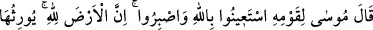
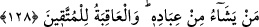
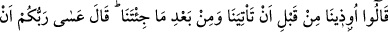
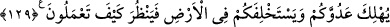

zamanda yaptığımız gibi tekrar erkek çocuklarını öldürmeye ve kadınlarını çalıştırmaya
başlayacağız. Böylece bizim ne kadar ezici bir kuvvet ve çoğunluğa sahip olduğumuz
bilinecektir. Mûsâ’nın müneccim ve kahinlerin elinde mülk ve saltanatımızın
yıkılacağını söyledikleri çocuk olmadığı ortaya çıkacaktır. “biz daima onların üstünde
eziciler olacağız.” dedi.” Daha önce olduğu gibi şimdi de biz, kuvvet bakımından
onlardan üstünüz. Durumumuz asla değişmemiştir. Onlar da aynı şekilde bizim elimizin
altında ezilenler olmaya devam edeceklerdir.
128. Musa kavmine dedi ki: “Allah’tan yardım isteyin ve sabredin. Şüphesiz ki
yeryüzü Allah’ındır. Kullarından dilediğini ona vâris kılar. Sonuç (Allah’tan korkup
günahtan) sakınanlarındır.”
Firavun’un bu konuşmasını işitip ona karşı gelmekten âciz kaldıklarında “Mûsâ,
kavmine” onları tesellî etmek ve iyi sonun onların olacağını va’d etmek üzere:
“Allah’dan yardım isteyin,” Firavun belasını defetmek husûsunda Allah Teâlâ’dan
yardım isteyin, Firavun’dan duyduğunuz asılsız sözlere “sabredin, şüphesiz yeryüzü”
Mısır toprakları “Allah’ındır, onu kullarından dilediğine verir. Sonuç,” ya Allah’ın
yardımı ve zafer veya cennet ile güzel âkıbet “(Allah’dan korkup günahlardan)
korunanlarındır.” ki siz de onlardansınız “dedi.” Çünkü rivayete göre Firavun’un
büyücüleri mağlup olup Mûsâ (a.s.)’ın peygamberliği net bir şekilde ortaya çıkınca
İsrailoğulları’ndan tam altmış bin kişi Mûsâ (a.s.)’a iman ederek şirk ve isyandan
korundular. Burada Allah Teâlâ’dan yardım dilemenin ve sabretmenin takva bâbından
olduğuna dikkat çekilmiştir.
Hâfız der ki :
Yaşlanmış olduğum halde Yusuf, sohbetiyle beni ağırlamakta
Eriştiğim bu devlet, hüzünler kulübesindeki sabrın eseridir
129. Onlar da, sen bize (peygamber olarak) gelmeden önce de geldikten sonra da
bize işkence edildi, dediler. (Musa), “Umulur ki Rabbiniz düşmanınızı helâk eder ve
onların yerine sizi yeryüzüne hakim kılar da nasıl hareket edeceğinize bakar” dedi.